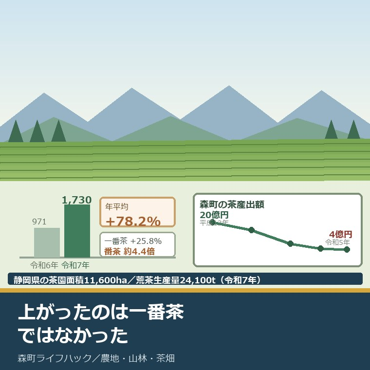
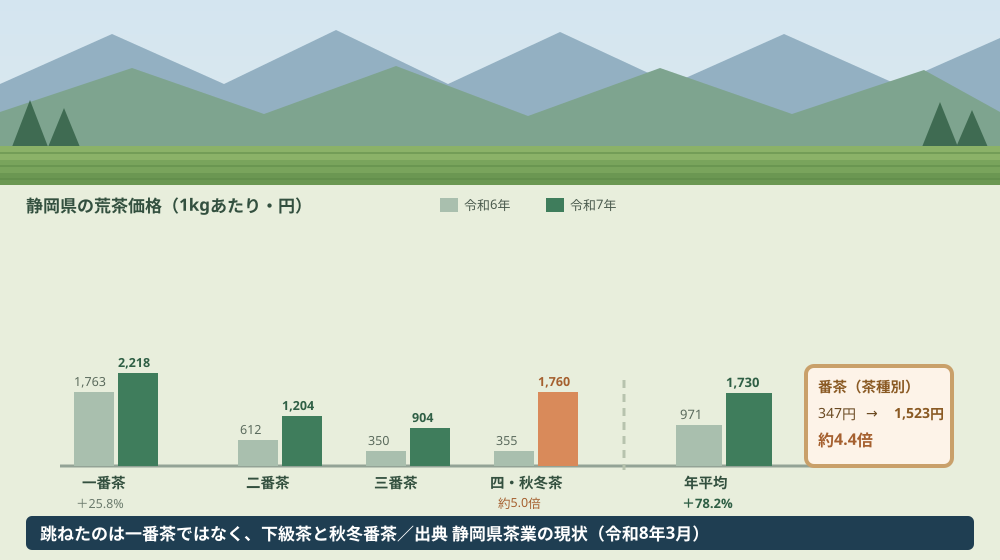
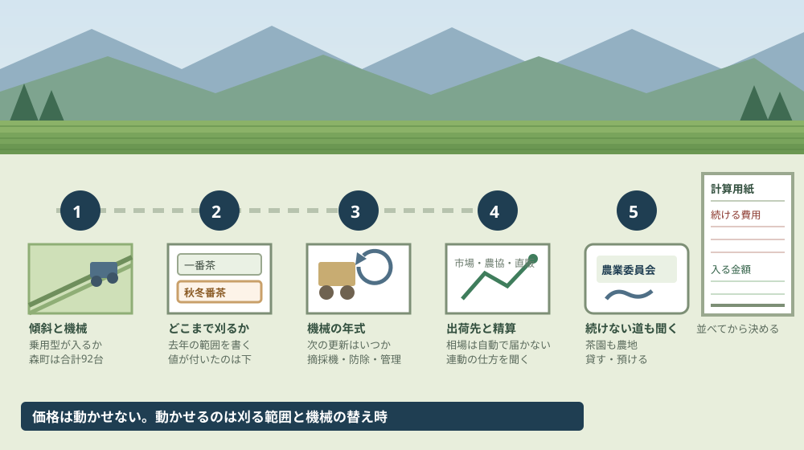

森町の茶を続けるか｜荒茶価格78%増と産出額4億円

この記事の要点
Q. 親の茶園を継ぎました。今年は茶が高いと聞きますが、続けたほうがいいのでしょうか。
A. 上がったのは一番茶ではありません。静岡県の荒茶の年平均価格は令和6年971円から令和7年1,730円へ上がりましたが、一番茶は25.8パーセント増です。跳ねたのは番茶の347円から1,523円。刈り捨てていた分に値が付いた年でした。判断は一年の価格ではなく、続ける条件で考えてください。
静岡県周智郡森町（遠州森町）で、親から茶園を引き継いだ。摘採を続けるか、それとも手放すか。この記事は、その二択の前で止まっている方に向けて書いています。
令和7年、静岡県の茶の価格が上がりました。静岡県が公表している「静岡県茶業の現状（令和8年3月）」の数字を見ると、荒茶の年平均価格は令和6年の971円から令和7年の1,730円へ動いています。
私の計算で78.2パーセント増。ただし、この数字をそのまま「茶が高く売れる年になった」と読むと、判断を誤ります。
今日は2026年8月27日。何が上がって何が上がらなかったのか、森町の茶がどこまで縮んできたのか、そして続けるかを決めるために今日できることを並べます。
公式情報から確定できること
2026年8月27日時点で、静岡県の統計資料、農林水産省の推計、森町の公表資料から確認できたことを並べます。資料の正式名称は「静岡県茶業の現状」で、発行は静岡県経済産業部農業局お茶振興課、版は令和8年3月です。出典は記事の末尾に載せています。
一つ目。静岡県の荒茶の年平均価格は、令和6年971円から令和7年1,730円になりました。同じ資料の茶期別荒茶価格（1キログラムあたり、静岡県経済連調べ）の数字です。
二つ目。一番茶は1,763円から2,218円です。同じ表の数字で、私の計算では25.8パーセント増です。
三つ目。二番茶は612円から1,204円になりました。三番茶は350円から904円です。
四つ目。四・秋冬茶は355円から1,760円になりました。同じ表の数字で、一番茶の2,218円に迫る水準です。
五つ目。茶種別で見ると、番茶が347円から1,523円です。同じページの茶種別荒茶価格によれば、私の計算で約4.4倍。せん茶は1,273円から1,588円、玉緑茶は1,110円から1,631円、玉露は7,798円から8,046円、かぶせ茶は2,207円から2,876円です。
六つ目。生葉価格の前年対比は174.0パーセントです。同じ資料の茶期別生葉価格には前年対比の欄があり、令和6年は98.0パーセント、令和7年は174.0パーセントと記されています。
七つ目。静岡県の荒茶生産量は24,100トンです。同じ資料の府県別荒茶生産量（農林水産省「農林水産統計」）によれば、令和6年は25,800トンでした。
八つ目。令和7年、鹿児島県が静岡県を上回りました。同じ表によれば鹿児島県は30,000トンで、静岡県の24,100トンを超えています。令和6年は静岡25,800トン、鹿児島27,000トンでした。
九つ目。静岡県の茶園面積は11,600ヘクタール（令和7年概数）です。同じ資料の府県別茶園面積によれば、令和2年15,200ヘクタール、令和6年12,800ヘクタールからの推移です。
十番目。県内の茶園面積のピークは昭和63年の23,300ヘクタールです。同じ資料に「茶園最大面積 全国（明治25年）63,100ha 静岡県（昭和63年）23,300ha」と記されています。
十一番目。静岡県の茶栽培経営体数は5,827です。同じ資料の県別茶栽培経営体数（農林業センサス）の令和2年の数字で、昭和40年は68,373戸。指数は8.5と記されています。
十二番目。中山間地域の茶販売農家数は2,801です。同じ資料によれば、平成17年は8,498（県内の48パーセント）、平成27年は4,608、令和2年は2,801。茶栽培面積は平成17年6,616ヘクタールから令和2年3,369ヘクタールになっています。
十三番目。森町の茶産出額は令和5年で4億円です。同じ資料の市町別茶産出額（茶産出額＝生葉産出額＋荒茶産出額）の数字です。
十四番目。森町のピークは平成12年の20億円です。同じ表によれば、昭和45年9億円、昭和60年16億円、平成7年11億円、平成12年20億円、平成17年17億円、平成29年6億円、令和2年4億円、令和3年5億円、令和4年5億円、令和5年4億円と推移しています。
十五番目。静岡県全体の茶産出額は令和5年で223億円です。同じ表の県計の数字で、昭和60年は778億円でした。
十六番目。令和6年の静岡県の茶産出額は214億円です。同じ資料の県内作物別の産出額によれば、みかん326億円、米269億円に次ぐ3位。府県別では鹿児島県241億円が静岡県214億円を上回っています。
十七番目。農林水産省の推計では、令和5年の森町の茶（生葉）は2.3億円、荒茶は2.0億円です。市町村別農業産出額（推計）の詳細品目別データの数字で、同じ年の森町の農業産出額は31.7億円です。
十八番目。令和6年分の森町の茶は、秘匿記号で公表されていません。同じ推計の令和6年（令和8年7月24日公表）では、森町の農業産出額は39.0億円、工芸農作物計は2.3億円と出ていますが、茶（生葉）と荒茶の欄は「x」となっています。
十九番目。森町の茶園面積は、平成21年の494ヘクタールが最後の公表値です。静岡県茶業の現状の市町別茶園面積には「平成21年度以降調査廃止。」と注記されています。昭和45年409ヘクタール、平成2年561ヘクタール、平成17年504ヘクタールという推移です。
二十番目。森町の荒茶生産量も平成21年で止まっています。同じ資料の市町別荒茶生産量によれば、昭和50年989トン、平成2年704トン、平成17年716トン、平成21年550トンで、こちらも調査廃止と注記されています。
二十一番目。森町の乗用型の茶園管理機械は合計92台です。同じ資料の市町別の茶園管理機械の普及状況（令和7年12月現在、お茶振興課調べ）によれば、摘採機63台、中切13台、防除8台、複合管理機8台。レール走行式は面積1ヘクタール・2台です。
二十二番目。静岡茶市場の取扱金額は約1.97倍になりました。同じ資料によれば、令和6年は3,096トンで2,555,016千円、令和7年は3,051トンで5,031,622千円です。数量は1.5パーセント減っています。
二十三番目。全国の緑茶輸出量は8,798トンから12,612トンになりました。同じ資料の累年統計によれば、私の計算で43.4パーセント増です。
二十四番目。価格が上がった理由を、この資料は説明していません。静岡県茶業の現状は統計と資料の集成であり、令和7年の価格高騰の要因を述べた本文は見当たりませんでした。
二十五番目。森町公式サイトに、茶の統計や茶業振興のページはありません。茶に関して確認できた森町公式のページは、『遠州森の茶業史』の販売案内（2024年12月9日更新）でした。本編は634ページ・5,500円、ダイジェスト版は35ページ・1,100円で、令和6年12月19日に販売が始まっています。

この図で描きたかったのは、棒の伸び方が茶期ごとに違うという点です。年平均だけを見ると、全体が一律に上がったように見えます。
もう一つ描いたのは、四・秋冬茶の棒が一番茶に迫っている点です。355円だったものが1,760円になり、一番茶の2,218円と同じ桁に並びました。
森町の茶園に置き換えると、この数字は何を意味するか
ここからは、公表された数字を面積と経営体で割り戻します。分母を書いたうえで、私の計算であることを先に断っておきます。
まず、価格の中身です。一番茶は1,763円から2,218円で25.8パーセント増、番茶は347円から1,523円で約4.4倍。年平均を78.2パーセント押し上げたのは、後者のほうです。
ここが、この記事でいちばん伝えたい点です。今年の価格は、一番茶が高く売れたから上がったのではありません。これまで刈り捨てるか安値で流していた秋冬番茶に、値が付いた年です。
茶園を継いだ方にとって、この違いは作業の量に直結します。一番茶だけを摘む経営と、秋冬番茶まで刈る経営では、機械も人手も投入する回数が違います。
次に、森町の規模を見ます。茶産出額は平成12年の20億円から令和5年の4億円へ、5分の1になりました。金額にして16億円が消えた計算です。
面積で割ってみます。静岡県は令和5年に茶産出額223億円、茶園面積13,300ヘクタール。1ヘクタールあたり約168万円です。この単価で森町の4億円を逆算すると、およそ238ヘクタール分になります。
ここは推測を交えて書きます。森町の茶園面積の最後の公表値は平成21年の494ヘクタール。県平均の単価で逆算した238ヘクタールと比べると、半分以下の水準です。単価は地域で違うので、面積がそのまま半減したという意味ではありません。
それでも、方向は読み取れます。森町の茶園面積のピークは平成2年の561ヘクタール。産出額のピークは平成12年の20億円。どちらも20年以上前の数字です。
担い手の側も見ておきます。静岡県の茶栽培経営体数は、昭和40年の68,373戸から令和2年の5,827へ。指数で8.5です。60年で12分の1になりました。
森町は中山間地域を抱えています。中山間地域の茶販売農家数は平成17年8,498から令和2年2,801へ、茶栽培面積は6,616ヘクタールから3,369ヘクタールへ。私の計算で農家数は3分の1、面積は半分になっています。森町の茶畑がどんな地形に載っているかは茶畑と地形のページに整理しました。
機械の数字は、判断の材料としてかなり実用的です。森町の乗用型の茶園管理機械は合計92台。摘採機63台、中切13台、防除8台、複合管理機8台です。乗用型が入る茶園と、入らない急傾斜の茶園では、続けられる条件が別物になります。
良い点：今年の価格が、茶園を持つ側にもたらしたもの
令和7年の価格には、茶園を継いだ人にとって評価できる面が4つあります。順に書きます。
一つ目。秋冬番茶に値が付いたことです。355円が1,760円になったということは、これまで採算に乗らなかった刈り取りが、収入の側に回った年があったということです。
二つ目。下級茶の底が上がったことです。番茶347円は、正直なところ刈り賃も出ない水準でした。1,523円なら、作業の対価として計算に入ります。
三つ目。市場の金額が実際に増えていることです。静岡茶市場の取扱金額は2,555,016千円から5,031,622千円へ。数量は1.5パーセント減っているので、単価が動いたことが金額に出ています。
四つ目。輸出が伸びていることです。全国の緑茶輸出量は8,798トンから12,612トンへ、私の計算で43.4パーセント増。国内消費だけに縛られない出口が広がっています。
森町の資料についても1つ挙げます。『遠州森の茶業史』が634ページで刊行されたことです。産出額が4億円まで縮んだ時期に、町が茶の歴史を1冊にまとめて売っている。記録を残す仕事を、後回しにしていません。
注文したい点：続けるかを決める側から見て足りないところ
ここからは、茶園を継いで判断を迫られている人の立場で、一事業者としての注文を3つ書きます。批判ではなく、材料が足りないという報告です。
一つ目。森町の茶園面積と荒茶生産量が、平成21年で止まっています。静岡県の資料には「平成21年度以降調査廃止。」と注記されています。17年前の494ヘクタールが、今も最新値です。
続けるかを決めるとき、いちばん知りたいのは「近所はどうしているか」です。森町の茶園がこの17年でどれだけ減ったのかを示す数字が、公表資料の中にありません。市町別の調査が難しいのは分かりますが、判断材料としては大きな穴です。
二つ目。令和6年の森町の茶産出額が、秘匿記号で読めません。農林水産省の推計は令和5年まで個別の額を出していましたが、令和6年は茶（生葉）も荒茶も「x」です。価格が跳ねた年の直前の数字が、市町単位では追えません。
三つ目。価格が上がった理由の説明が、公表資料から出ていません。静岡県茶業の現状は統計の集成なので、そこに要因分析を求めるのは筋違いかもしれません。それでも、続けるかを判断する人にとって「なぜ上がったのか」は「来年も続くのか」と同じ問いです。

この図で描きたかったのは、一段目が価格ではなく傾斜だという点です。乗用型が入るかどうかで、続けられる条件がほぼ決まります。
右端に計算用紙を置いたのには理由があります。今年の価格でいくらになったかではなく、来年以降も出続ける費用と並べないと、判断の材料になりません。
対案・結論：今日、茶園を継いだ人が数えられること
続けるか手放すかを今日決める必要はありません。順番に5つ、今日から数えられることを書きます。
一つ目。茶園の傾斜と、乗用型の機械が入るかどうかを確かめてください。森町の乗用型は合計92台。入らない茶園は、人手か乗用型以外の方法に頼ることになります。
二つ目。去年、何番茶まで摘んだかを書き出してください。一番茶だけなのか、二番茶まで刈ったのか、秋冬番茶を残したのか。令和7年の価格が効いたのは、秋冬番茶を刈った経営です。
三つ目。機械の年式と、次の更新時期を書き出してください。摘採機、防除機、管理機。今年の価格で入った金額が、更新費用の何割にあたるかを並べると、続ける条件が数字になります。
四つ目。出荷先と精算の方法を確かめてください。市場に出しているのか、農協経由か、直販か。静岡茶市場の単価が上がっても、それが自分の精算に反映される経路かどうかは別の話です。
五つ目。続けないと決めた場合の相談先を、先に確かめておいてください。茶園は農地なので、貸すにも預けるにも農業委員会が関わります。摘採より先に数える条件は森町で茶園を引き継いだときに数える条件の記事に書きました。
ここまでやっても、結論を出す必要はありません。今日の成果は「今年の価格が自分の茶園に効く種類のものだったかどうかを判別できた」という一点で十分です。決めるための材料が1つ増えた状態を、私は前進として扱っています。
森町の茶がどういう歴史の上にあるかは「森の茶」は町の歴史そのものだったという記事、産地としての全体像は森町のお茶と茶畑のページにまとめています。
家族に残す記録
数えた内容は、その日のうちに1枚にまとめてください。翌年の相場が出たとき、そのまま比べられます。
書き出す項目は7つです。①茶園の所在（大字・字・地番）②面積と傾斜 ③乗用型が入るか ④去年摘んだ番茶の範囲 ⑤機械の年式と次の更新時期 ⑥出荷先と精算方法 ⑦今年の精算額。
確認できなかったことも同じ紙に残します。「精算の単価が市場価格とどう連動しているか、まだ聞けていない」も記録です。次に出荷先へ聞くときの質問文になります。
大石の視点
私は磐田市で小さな不動産業を営みながら、森町の空き家や農地の相談も受けています。ここからは統計の話ではなく、私がどう見ているかを書きます。
体験として書ける場面が手元にないので、意見として書きます。私はこの78.2パーセントという数字を、朗報としては読みませんでした。
理由は、上がった場所です。番茶が4.4倍になったということは、それまでの347円が異常に低かったということでもあります。底が抜けていた市場に、一時的に値が戻った。私にはそう見えます。
不動産の目で言うと、価格より効いてくるのは機械と傾斜です。乗用型が入る茶園と入らない茶園では、同じ1ヘクタールでも続けられるかどうかが変わります。これは相場が上がっても下がっても変わりません。
森町の茶産出額が20億円から4億円になった一方で、令和6年の農業産出額は39.0億円ありました。茶が縮んだぶん、町の農業が全部縮んだわけではありません。これは、続けないと決めた場合にも道があるという意味だと私は受け取っています。
ただ、私は今年の価格が続くのかどうかを判断できていません。静岡県の資料は要因を説明していないので、輸出の伸びによるものなのか、他産地の事情なのか、私には読み切れませんでした。分からないことは分からないと書いておきます。
だから私は、相談を受けたときに「今年は高いから続けましょう」とは言いません。一年の価格で決めた判断は、翌年の価格でひっくり返ります。
言えるのは1つだけです。今年の精算額と、機械の次の更新費用を並べて書いてみてください。その2つが並んだ紙があれば、続けるにしても手放すにしても、話が具体的になります。
まとめ
この記事で確認した事実を、最後に並べ直します。すべて2026年8月27日時点で公表されている内容です。
- 資料は「静岡県茶業の現状（令和8年3月）」（静岡県経済産業部農業局お茶振興課）。掲載元ページの更新日は2026年7月27日
- 静岡県の荒茶の年平均価格は令和6年971円、令和7年1,730円。私の計算で78.2パーセント増
- 茶期別では一番茶1,763円→2,218円（私の計算で25.8パーセント増）、二番茶612円→1,204円、三番茶350円→904円、四・秋冬茶355円→1,760円
- 茶種別では番茶347円→1,523円（私の計算で約4.4倍）、せん茶1,273円→1,588円、玉緑茶1,110円→1,631円、玉露7,798円→8,046円、かぶせ茶2,207円→2,876円
- 生葉価格の前年対比は令和6年98.0パーセント、令和7年174.0パーセント
- 静岡県の荒茶生産量は令和7年24,100トン。鹿児島県は30,000トンで、令和7年に静岡県を上回った
- 静岡県の茶園面積は令和7年概数で11,600ヘクタール。ピークは昭和63年の23,300ヘクタール
- 静岡県の茶栽培経営体数は令和2年で5,827（昭和40年68,373戸、指数8.5）
- 中山間地域の茶販売農家数は平成17年8,498から令和2年2,801、茶栽培面積は6,616haから3,369ha
- 森町の茶産出額は令和5年4億円。ピークは平成12年の20億円で、私の計算では5分の1
- 静岡県全体の茶産出額は令和5年223億円、令和6年214億円（鹿児島県241億円が上回る）
- 農林水産省の推計では令和5年の森町は茶（生葉）2.3億円・荒茶2.0億円、農業産出額31.7億円。令和6年の農業産出額は39.0億円で、茶は秘匿記号「x」
- 森町の茶園面積は平成21年494ヘクタール、荒茶生産量は平成21年550トンが最後の公表値（平成21年度以降調査廃止）
- 森町の乗用型の茶園管理機械は合計92台（摘採機63・中切13・防除8・複合管理機8、令和7年12月現在）
- 静岡茶市場の取扱金額は令和6年2,555,016千円→令和7年5,031,622千円。数量は3,096トン→3,051トン
- 全国の緑茶輸出量は令和6年8,798トン→令和7年12,612トン（私の計算で43.4パーセント増）
- 令和7年の価格上昇の要因を説明した本文は、静岡県茶業の現状の中に見当たらない
よくある質問
Q1. 令和7年に静岡県の荒茶価格が78パーセント増えたというのは、一番茶の話ですか。
A1. 年平均の話です。静岡県茶業の現状（令和8年3月）によれば、荒茶の年平均価格は令和6年971円から令和7年1,730円へ上がりました。私の計算で78.2パーセント増です。一番茶は1,763円から2,218円で25.8パーセント増にとどまります。跳ねたのは番茶（347円→1,523円）と四・秋冬茶（355円→1,760円）で、下級茶と秋冬番茶が平均を押し上げました。
Q2. 森町の茶の産出額は、今どれくらいですか。
A2. 静岡県茶業の現状（令和8年3月）の市町別茶産出額によれば、森町は令和5年で4億円です。平成12年の20億円がピークで、平成29年6億円、令和2年4億円と推移しています。農林水産省の市町村別農業産出額（推計）では、令和5年の森町は茶（生葉）2.3億円・荒茶2.0億円。令和6年分は秘匿記号のため個別の額は公表されていません。
Q3. 森町の茶園面積は、今どれくらいありますか。
A3. 公表されていません。静岡県茶業の現状（令和8年3月）の市町別茶園面積は「平成21年度以降調査廃止」と注記されており、森町の数字は平成21年の494ヘクタールが最後です。平成2年の561ヘクタールがピークでした。現在の面積を知りたい場合は、県全体の数字か、ご自身の茶園の登記・課税上の地目と面積で確かめることになります。
最後に一つだけ。ここに書いた価格、面積、産出額は、いずれも2026年8月27日時点で公表されている内容です。令和7年の価格上昇の要因、森町の現在の茶園面積と荒茶生産量、令和6年の森町の茶産出額、令和8年以降の相場の見通しは、公表資料からは確認できていません。ご自身の茶園の精算単価と条件は、出荷先と森町役場の農地の担当窓口へご確認ください。
参考にした公式情報
- 静岡県茶業の現状（令和8年3月）／静岡県経済産業部農業局お茶振興課（全90ページのPDFで、表紙に「静岡県茶業の現状／令和８年３月／静岡県経済産業部農業局お茶振興課」と記されていること、茶期別荒茶価格（静岡県経済連）で令和7年が一番茶2,218円・二番茶1,204円・三番茶904円・四・秋冬茶1,760円・年平均1,730円、令和6年が1,763円・612円・350円・355円・971円であること、茶種別荒茶価格で令和7年がせん茶1,588円・玉緑茶1,631円・番茶1,523円・玉露8,046円・かぶせ茶2,876円、令和6年が1,273円・1,110円・347円・7,798円・2,207円であること、茶期別生葉価格の前年対比が令和6年98.0%・令和7年174.0%であること、府県別荒茶生産量で令和7年の静岡24,100t・鹿児島30,000t・全国75,100tであること、府県別茶園面積で令和7年概数の静岡が11,600haで「茶園最大面積 全国（明治25年）63,100ha 静岡県（昭和63年）23,300ha」と記されていること、県別茶栽培経営体数で令和2年の静岡が5,827戸・指数8.5（昭和40年68,373戸）であること、中山間地域の茶販売農家数が平成17年8,498から令和2年2,801、茶栽培面積が6,616haから3,369haであること、市町別茶産出額で森町が昭和45年9億円・平成12年20億円・平成17年17億円・平成29年6億円・令和2年4億円・令和5年4億円、県計が令和5年223億円であり「＊茶産出額＝生葉産出額＋荒茶産出額」「＊平成20年から平成25年は未調査。」と注記されていること、県内作物別の産出額で令和6年の静岡県の茶が214億円で府県別では鹿児島241億円が上回ること、市町別茶園面積で森町が平成2年561ha・平成21年494haであり「＊平成21年度以降調査廃止。」と注記されていること、市町別荒茶生産量で森町が昭和50年989t・平成21年550tであること、市町別の茶園管理機械の普及状況（令和7年12月現在）で森町がレール走行式1ha・2台、乗用型は摘採機63・中切13・防除8・複合管理機8の合計92台であること、静岡茶市場が令和6年3,096t・2,555,016千円、令和7年3,051t・5,031,622千円であること、累年統計で全国の緑茶輸出量が令和6年8,798t・令和7年12,612tであること、資料中に令和7年の価格上昇の要因を説明した本文が見当たらないことを2026年8月27日に確認）
- 静岡県の茶業／静岡県（担当が経済産業部農業局お茶振興課であること、「静岡県茶業の現状（令和8年3月）」が6.0MBのPDFとして掲載されていること、ページ更新日が2026年7月27日であることを2026年8月27日に確認）
- 市町村別農業産出額（推計）／農林水産省（「令和6年市町村別農業産出額（推計）（農林業センサス結果等を活用した市町村別農業産出額の推計結果） 令和8年7月24日公表」と記されていること、「令和8年7月24日：2020農林業センサスの公表値の訂正に伴い、令和元年～5年市町村別農業産出額（推計）を遡及して推計した。」「令和8年8月3日更新：正誤表(PDF:123KB)」と記されていること、詳細品目別データで令和5年の森町（団体コード22461）の農業産出額が317（1,000万円単位＝31.7億円）・茶（生葉）23・荒茶20であること、令和6年の森町の農業産出額が390（39.0億円）・工芸農作物計23・加工農産物20であり茶（生葉）と荒茶が秘匿記号「x」であること、担当が大臣官房統計部経営・構造統計課であることを2026年8月27日に確認）
- 『遠州森の茶業史』販売について／静岡県森町（更新日が2024年12月9日であること、本編が634ページ・5,500円、ダイジェスト版が35ページ・1,100円であること、販売開始が令和6年12月19日であること、担当が社会教育課文化振興係であることを2026年8月27日に確認）
- 令和7年度 農業委員会の農地利用の最適化の推進の状況その他事務の実施状況の公表／静岡県森町（令和8年3月31日現在として、管内の農地面積が907ha（田576ha・畑331ha）、総農家数598、農業経営体数307、基幹的農業従事者数454人（うち女性198人、40代以下63人）、認定農業者68経営体であること、農地集積率が目標60.0%に対し実績45.6%（413.5ha／907ha）であることを2026年8月27日に確認）
- 農林業／静岡県森町（森町の農林業に関する案内の一覧ページであり、2026年8月27日時点で茶の統計や茶業振興を主題とするページが掲載されていないことを2026年8月27日に確認）
- 農業経営基盤強化促進法に基づく地域計画について／静岡県森町（更新日が2026年3月12日であること、森町地域計画に区域内の農用地等面積890ha（田542ha・畑317ha）、70才以上の農業者の農地面積の合計817ha、地域内の農業を担う者が171経営体と記されていることを2026年8月27日に確認）

最終確認日：2026-08-27 ／ 本記事は公表情報と執筆者の見解を分けて記載しています。令和7年の価格上昇の要因、森町の現在の茶園面積と荒茶生産量、令和6年の森町の茶産出額、令和8年以降の相場の見通しは、公表資料から確認できていません。増減率や1ヘクタールあたりの金額は執筆者が公表値を割った概算で、個別の茶園の収支を示すものではありません。県平均の単価から森町の面積を逆算した238ヘクタールは推測であり、実測値ではありません。制度・数値・相場は変動します。ご自身の茶園の精算単価と条件は、出荷先と森町役場の農地の担当窓口へご確認ください。